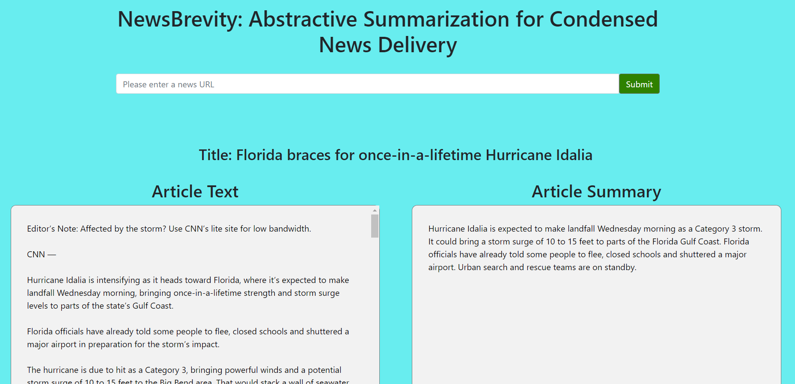
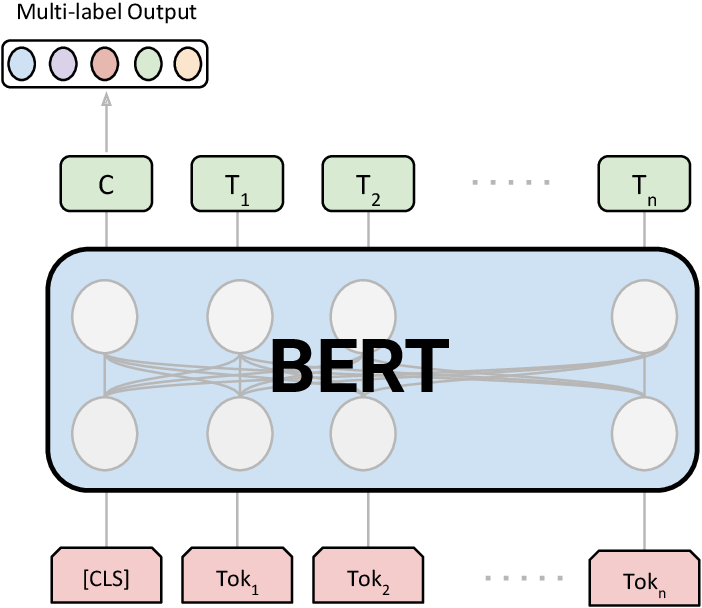
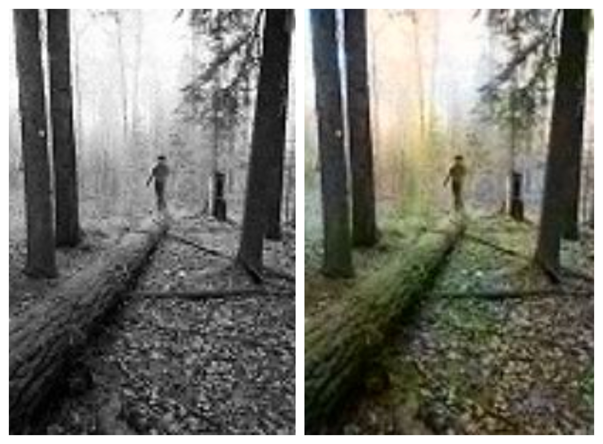
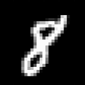
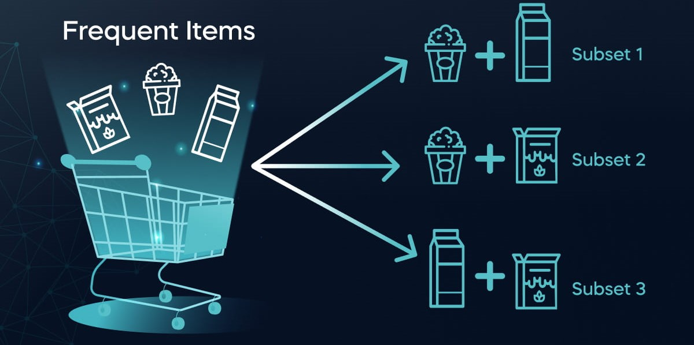
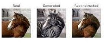
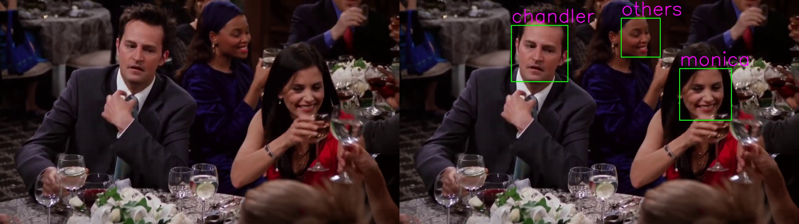

Abstractive Text Summarization using BART
This project is a Flask-based web application that uses the BART model to automatically generate abstractive summaries for input article URLs, simplifying the process of extracting key insights from lengthy texts.

Multi-Class Text Classification using BERT
Created, trained, and fine-tuned a BERT model,a powerful Transformer model, for classification tasks using the AG News dataset consisting of 30,000 training and 1,900 test samples per class over the four classes: World, Sports, Business, and Sci/Tech and achieving over 97% accuracy.

Image Colorization using Deep Transfer Learning
By utilizing convolutional autoencoders and leveraging the feature extraction capabilities of the VGG16 model, the project aims to build a model that can effectively and accurately convert grayscale images into RGB images, adding color to the previously colorless images.

Recommender system using collaborative filtering
This project builds a beauty product recommendation system using user preferences. It suggests products by finding similar users' preferences and making personalized recommendations. This involves calculating user similarity and using that to suggest relevant items.

Generative Model using Pytorch Autoencoders
On the MNIST dataset, autoencoders are constructed using the PyTorch framework. Finally, we learn how to use autoencoders as generative models and then create fresh images of digits using the generative model.

Customer Churn Prediction using Ensemble Techniques
This project focuses on customer churn prediction using ensemble techniques, involving the training of various machine learning algorithms like Logistic Regression, Decision Trees, XGBoost, K-Nearest Neighbors, LightGBM, and Support Vector Machines. The aim is to create a reliable and precise predictive model by optimizing hyperparameters and leveraging ensemble methods for improved overall predictive accuracy.

Customer Market Basket Analysis using Apriori and FPGrowth
This project shows how to combine and analyze datasets, select relevant features, and implement association rule mining algorithms for Market Basket Analysis in Python.

CycleGAN for image to image translation
The CycleGAN model is capable of translating images from one domain to another, such as converting images of horses to zebras or vice versa, even when there are no paired examples of horses and zebras during the training process.

Face Recognition using FaceNet and SVM
In this project, face images are extracted from a YouTube video, preprocessed, and transformed into 128-dimensional vector embeddings using FaceNet, which are then utilized to train a machine learning model for facial recognition and labeling faces in frames or videos.
Stock Price Prediction using RNN and LSTM
The project aims to develop and evaluate various deep learning models for time series forecasting using historical stock price data of the Apple (AAPL) stock. It employs Recurrent Neural Networks (RNN), Long Short-Term Memory (LSTM) models, and a Multivariate LSTM model to make predictions.